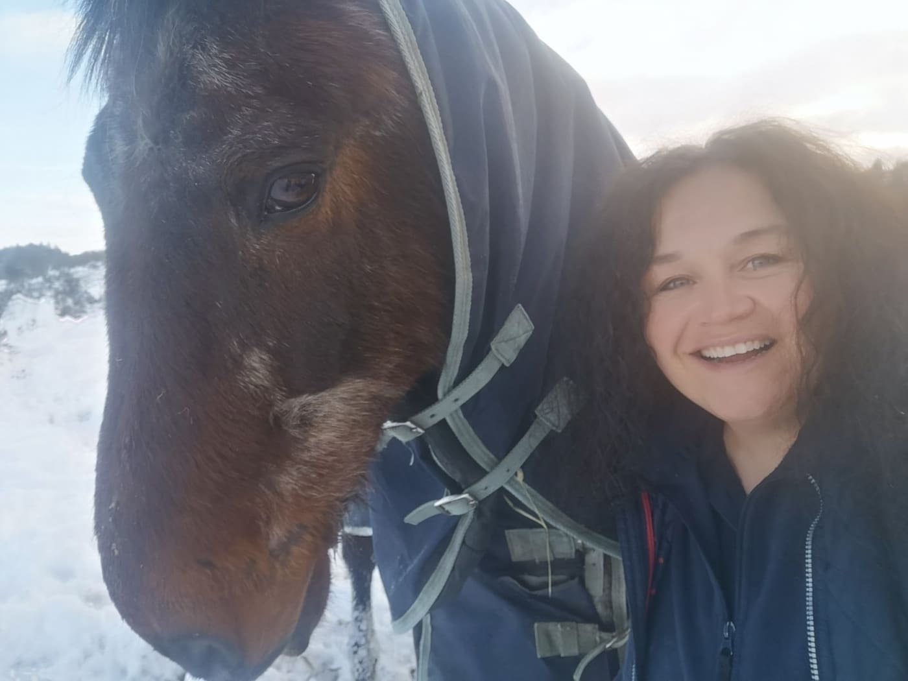
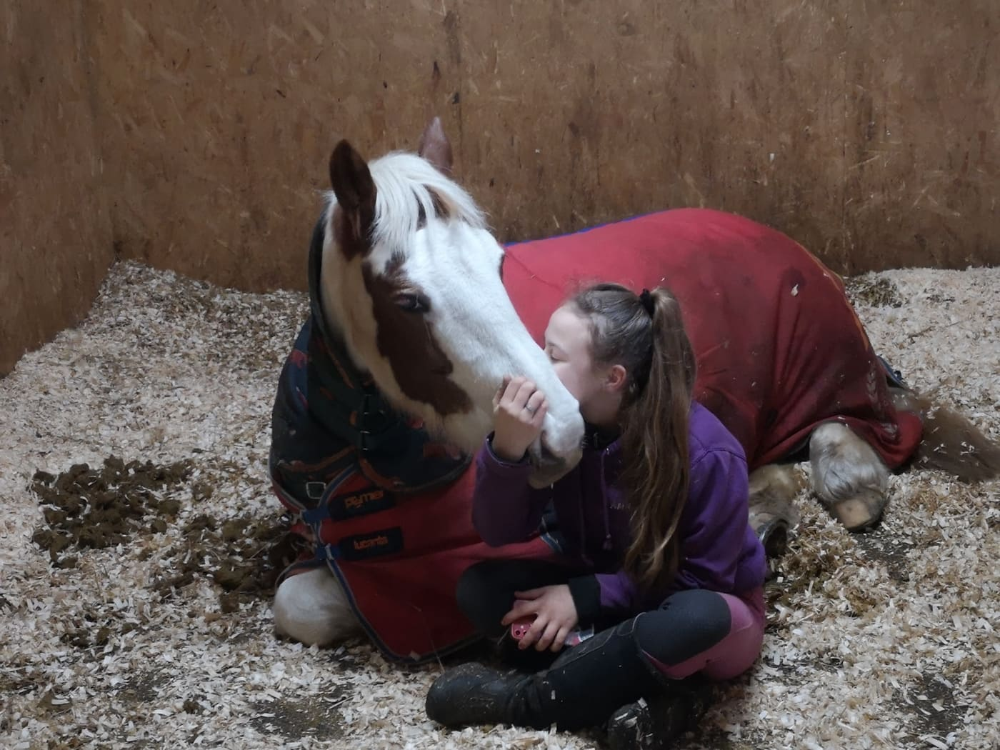
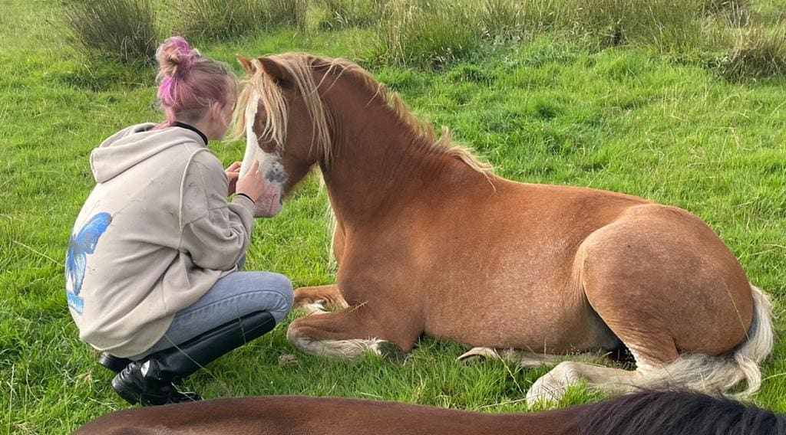

Angela Hickman
Founder
Angela is the heart and soul of the Plaited Ponies experience. With over 40 years equestrian experience and a deep natural connection to horses Angela is an extremely driven, empathic and caring business woman, Angela will ensure your Plaited Ponies experience is as wonderful as possible.

Gracie
Gracie started working with horses at the age of 5 and has become passionately devoted to horses. Gracie is impressively hardworking and loves building bonds with horses and finding out the little parts of their personalities that makes them unique. Gracie takes part in all the Plaited Ponies activities and has a great mind for horse welfare. Gracie is also studying the Equine and Horse Care course at Oatridge College with Ellie.

Ellie
Ellie also started working with horses at the age of 5 and is an incredibly hard working and caring soul. Ellie loves to make sure the horses are happy and healthy and feels being around them makes her happy too. Ellie works in all areas of Plaited Ponies and will help ensure your Plaited Ponies experience is as warm and friendly as possible. Ellie is also studying the Equine and Horse Care course at Oatridge College with Gracie.
